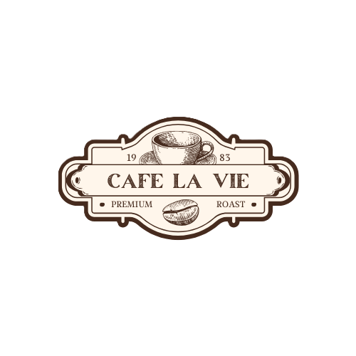

A Day in Winter: Life in a Rural Bangladeshi Village
Project Type: Computer Graphics
Skills Used: C++, OpenGL, 3D Modeling, Scene Design
Created a scenic simulation of rural Bangladesh during winter with 4 different display scenes. Implemented 3D objects, lighting, and environmental effects. Learned graphics programming, coordinate transformations, and scene rendering techniques.

Cafe La Vie Management System
Project Type: Desktop Application
Skills Used: C#, .NET Framework, WPF, SQL Server, UI Design
Developed a complete cafe management system to handle orders, billing, and inventory. Implemented CRUD operations for menu items and customer management. Learned desktop UI design using WPF and database integration.
Bank Management System
Project Type: Java Application
Skills Used: Java, Object-Oriented Programming, File Handling, GUI
Created a banking system application that allows users to manage accounts, deposits, withdrawals, and transaction history. Implemented GUI for ease of use. Gained practical knowledge of Java programming, file I/O, and user interface development.